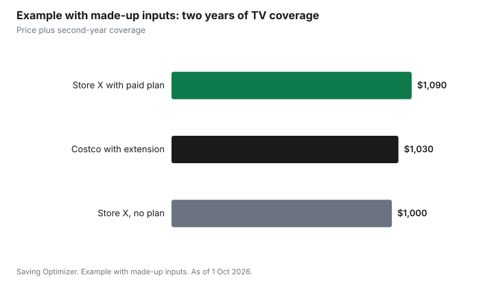

Technology · Canada
Costco Electronics in Canada: Return Window, Warranty and Price Adjustments
Costco electronics in Canada come with three policies worth more than most sale tags: a 90-day return window on TVs, computers, tablets, phones and other listed electronics, a free Technical and Warranty Service that extends the manufacturer's warranty to two years on TVs, projectors, major appliances and computers (not tablets), and a price adjustment if Costco's own price drops within 30 days. You need a membership to buy, and Costco does not match other stores' prices. Whether it fits depends on whether those policies replace something you would otherwise pay for.
Key takeaways
- Costco Canada accepts returns of listed electronics within 90 days of purchase, as of 1 Oct 2026. Cellular phone details vary by carrier contract.
- Costco Technical and Warranty Service is free for members: setup help, troubleshooting and warranty assistance at 1-866-231-9731.
- Costco extends the manufacturer's warranty to two years from purchase on TVs, projectors, major appliances and computers, excluding tablets, when the manufacturer's is shorter.
- Costco adjusts to its own lower price within 30 days. It does not match competitors. Gift cards are not eligible for price adjustments or promotions.
- Membership is $65 for Gold Star and $130 for Executive, with 2 percent back on eligible purchases up to $1,250 a year on Executive.
The 90-day return window
Costco's satisfaction guarantee covers most merchandise without a fixed window, but electronics are an exception. As of 1 Oct 2026, Costco Canada says it accepts returns within 90 days of purchase for televisions, major appliances, projectors, computers, cameras, drones, camcorders, digital music players, tablets, smart watches, cellular phones and other electronic products it identifies. For cellular phones, return details vary by the carrier's service contract.
Ninety days is long compared with the 30 days most other large retailers list for most items. It gives time to test a laptop through a work cycle or a TV through a season of the shows you watch. Keep the box, accessories and receipt, and wipe personal data before returning a computer or phone. The retailer policy comparison puts the windows side by side.
Technical and Warranty Service and the second year
Costco Technical and Warranty Service, formerly called Concierge, is free technical support for Costco Canada members. Costco says it covers televisions, projectors, major appliances, computers, tablets, cameras, camcorders, smart watches, security cameras and digital music players bought from Costco Canada. Support for cellular phones comes from the phone's service provider. Have your membership number, the Costco item number from the receipt, the model and serial numbers, and the purchase date when you call 1-866-231-9731.
The warranty extension is narrower than the support list. Costco extends the manufacturer's warranty to two years from the date of purchase on televisions, projectors, major appliances and computers, excluding tablets, bought from Costco Canada, if the manufacturer's warranty is shorter. The manufacturer's coverage terms still apply. Before buying a paid extended warranty elsewhere, count this second year.
In Quebec, the legal warranty of good working order from 5 October 2026 adds its own floor for new goods: 3 years for phones, tablets, computers and consoles, and 4 years for televisions, from delivery, whichever store you buy from.
| Product | Return window | Technical support | Warranty extended to 2 years |
|---|---|---|---|
| Televisions | 90 days | Yes | Yes, if the manufacturer's is shorter |
| Computers | 90 days | Yes | Yes, if the manufacturer's is shorter |
| Tablets | 90 days | Yes | No |
| Cellular phones | 90 days; varies by carrier contract | From the service provider | Not listed |
| Cameras, smart watches | 90 days | Yes | Not listed |
Price adjustments, not price matching
If Costco's own price drops within 30 days of your purchase, Costco adjusts the difference. In a warehouse, bring the receipt to the membership counter. For Costco.ca orders, use the online form; Costco says the credit takes 5 to 7 business days. Costco does not match another retailer's price. Gift cards are not eligible for price adjustments or promotions.
Because the window is 30 days, keep an eye on the item after you buy. The price-tracking guide shows how to log prices so a drop is easy to spot.
Does the membership pay for itself on electronics?
A membership is $65 a year for Gold Star or $130 for Executive, which adds 2 percent back on eligible purchases up to $1,250 a year. On electronics alone, the membership has to be worth it through lower prices, the longer return window, or a warranty year you would otherwise buy. Most households weigh it across groceries, gas and household items too; the membership guide and the Executive versus Gold Star guide do that math.
Example with made-up inputs: a TV and the second-year warranty
These numbers are an example with made-up inputs, not Costco prices. A buyer compares the same TV at two stores. Store X sells it for $1,000 and offers a paid second-year protection plan for a made-up $90. Costco sells it for $1,030, and the second year comes from the warranty extension. With the protection plan, Store X costs $1,090 against Costco's $1,030. Without the plan, Store X is $30 cheaper and the buyer carries the second-year risk.
| Option | TV price | Second-year coverage | Total |
|---|---|---|---|
| Store X with paid plan | $1,000 | $90 | $1,090 |
| Costco with extension | $1,030 | $0 | $1,030 |
| Store X without plan | $1,000 | None | $1,000 |

Sources
- Costco Canada, What is Costco's return policy? and Costco's satisfaction guarantee, as of 1 Oct 2026. 90 days for listed electronics; cellular phone details vary by carrier contract; gift cards not returnable.
- Costco Canada, What is the Costco Technical and Warranty Service? and the Technical and Warranty Service page, as of 1 Oct 2026. Free member support at 1-866-231-9731; warranty extended to two years on TVs, projectors, major appliances and computers excluding tablets.
- Costco.ca price adjustment answer, as of 1 Oct 2026. Own-price adjustment within 30 days; Costco.ca by form, credit in 5 to 7 business days; gift cards not eligible.
- Costco Canada membership page, as of 1 Oct 2026. Gold Star $65; Executive $130 with 2 percent reward up to $1,250.
- Office de la protection du consommateur (Quebec), warranty of good working order, as of 1 Oct 2026.
- Store X and every amount in the example table and chart are an example with made-up inputs.
Frequently asked questions
How long do you have to return electronics to Costco in Canada?
As of 1 Oct 2026, Costco Canada accepts returns within 90 days of purchase for televisions, computers, tablets, cameras, smart watches, cellular phones and other listed electronics. Cellular phone details vary by carrier contract.
Does Costco extend the warranty on electronics?
Costco extends the manufacturer's warranty to two years from purchase on televisions, projectors, major appliances and computers, excluding tablets, bought from Costco Canada, when the manufacturer's warranty is shorter. Call Costco Technical and Warranty Service at 1-866-231-9731.
Is Costco Concierge still available in Canada?
It is now called Costco Technical and Warranty Service. It gives members free setup help, troubleshooting and warranty assistance for listed products bought from Costco Canada. Support for cellular phones comes from the service provider.
Does Costco price-match electronics?
No. Costco adjusts to its own lower price within 30 days of your purchase but does not match other retailers. Gift cards are not eligible for price adjustments or promotions.
Do I need a Costco membership to buy electronics?
Yes. As of 1 Oct 2026 the Gold Star membership is $65 a year and Executive is $130 a year with 2 percent back on eligible purchases up to $1,250 a year.
Researched and drafted with AI assistance and fact-checked against official Canadian sources. How we create content.
Disclosure: Costco is described by its published policies; this is not a ranking or an endorsement. Saving Optimizer may earn a commission if a partner link is added later. No partnership is claimed. Education only.